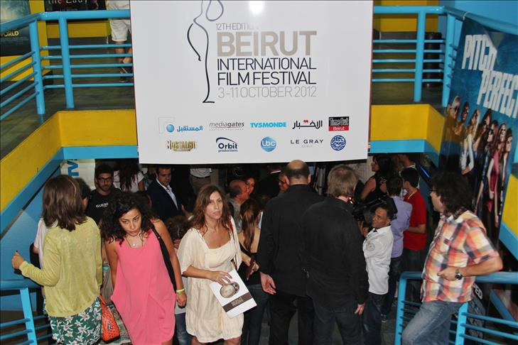
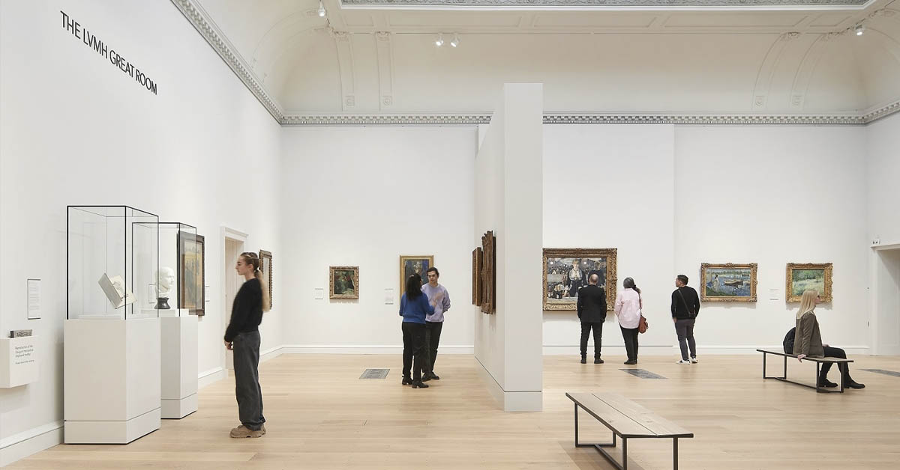
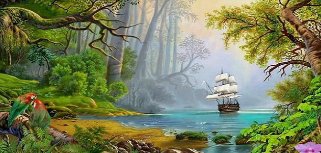
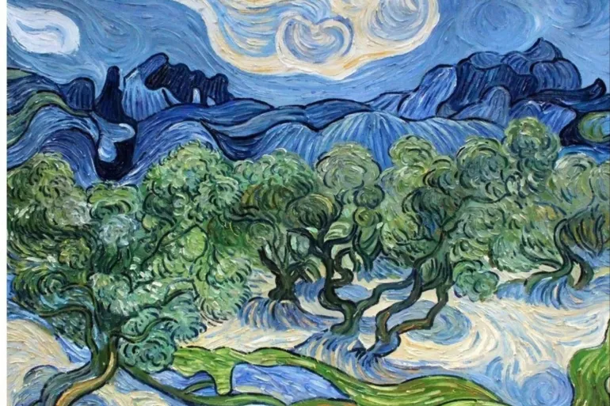
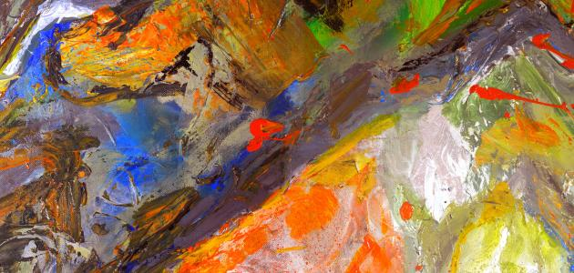

أحدث الأخبار الثقافية
مهرجان بيروت السينمائي يختتم فعالياته

اختتم مهرجان بيروت السينمائي الدولي فعالياته أمس، بحفل توزيع جوائز شهد تتويج فيلم "الأفق البعيد" للمخرج اللبناني سمير نصر بجائزة أفضل فيلم. واستمر المهرجان على مدى أسبوع كامل، وعرض خلاله أكثر من 50 فيلماً من مختلف دول العالم.
وشهد المهرجان حضوراً جماهيرياً كبيراً، بالإضافة إلى مشاركة عدد من المخرجين والممثلين العرب والأجانب. وتضمن برنامج المهرجان أيضاً عدة ورش عمل وندوات حول صناعة السينما.
الأفلام الفائزة في مهرجان بيروت السينمائي
| الجائزة |
الفيلم |
المخرج |
| أفضل فيلم |
الأفق البعيد |
سمير نصر (لبنان) |
| أفضل إخراج |
الظلال الصامتة |
مريم حداد (تونس) |
| أفضل سيناريو |
الأيام الأخيرة |
كريم فهمي (مصر) |
| أفضل ممثل |
موسم الحصاد |
علي سليمان (فلسطين) |
| أفضل ممثلة |
الأفق البعيد |
نادين لبكي (لبنان) |
افتتاح معرض فني جديد في متحف بيروت

افتتح في متحف بيروت للفن الحديث معرض "ألوان من بلادي" للفنانة التشكيلية ريما الحاج، والذي يضم أكثر من 30 لوحة فنية تعكس جمالية الطبيعة اللبنانية وتنوعها الثقافي. ويستمر المعرض لمدة شهر كامل، ويتاح للزوار يومياً من الساعة العاشرة صباحاً وحتى السادسة مساءً.

لوحة "الجبل الأزرق" - ريما الحاج
|

لوحة "شاطئ بيروت" - ريما الحاج
|

لوحة "الوادي الأخضر" - ريما الحاج
|
وقالت الفنانة ريما الحاج في حفل الافتتاح إن "هذا المعرض هو محاولة لإبراز جمال لبنان رغم كل الظروف الصعبة التي يمر بها، والتأكيد على أن الفن هو رسالة أمل وجمال في وجه كل التحديات".
|